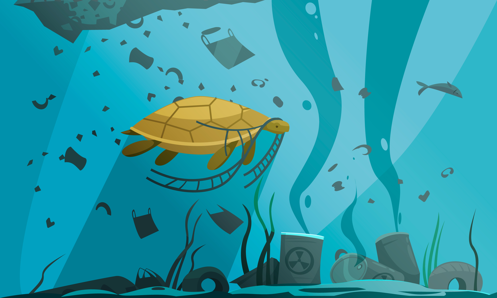

El Problema

La contaminacion del agua es la alteración, modificación y transformación del líquido que sostiene la vida en la tierra, sea por sustancias o agentes sólidos, líquidos, físicos, químicos y cualquier contaminante que provoca que su estado natural sea toxico para todas las especies y provoca daño a la vida marina.
Ejemplos principales
- Basura
- Desechar residuos quimicos industriales
- Explotacion minera
- Desechos cloacales
- Desechos de la industria naval